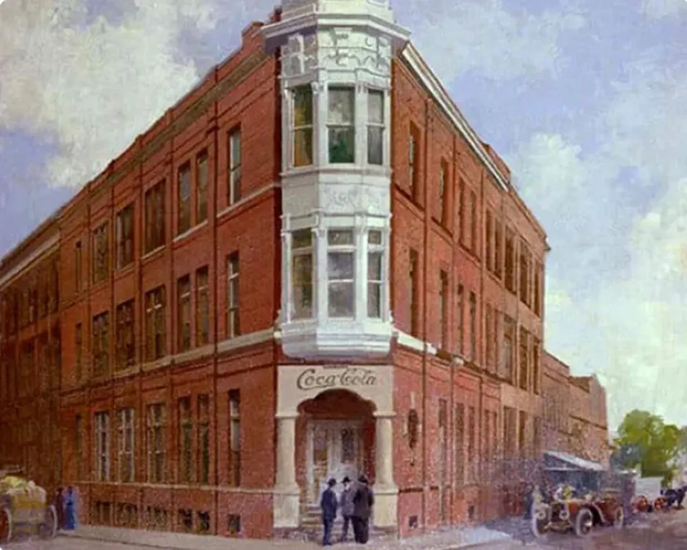
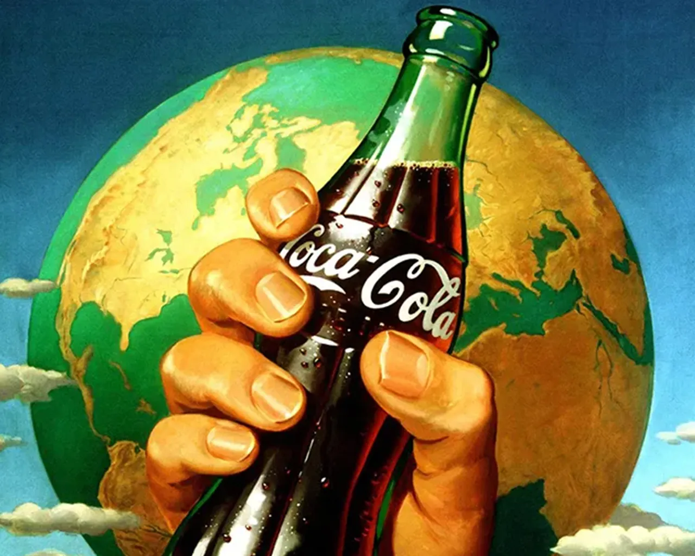
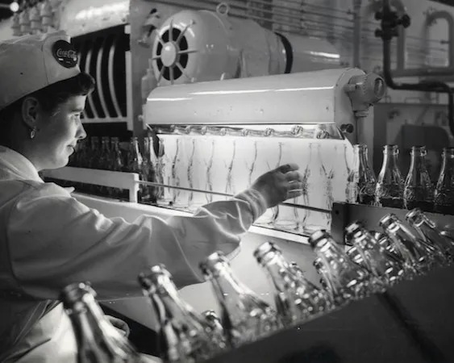
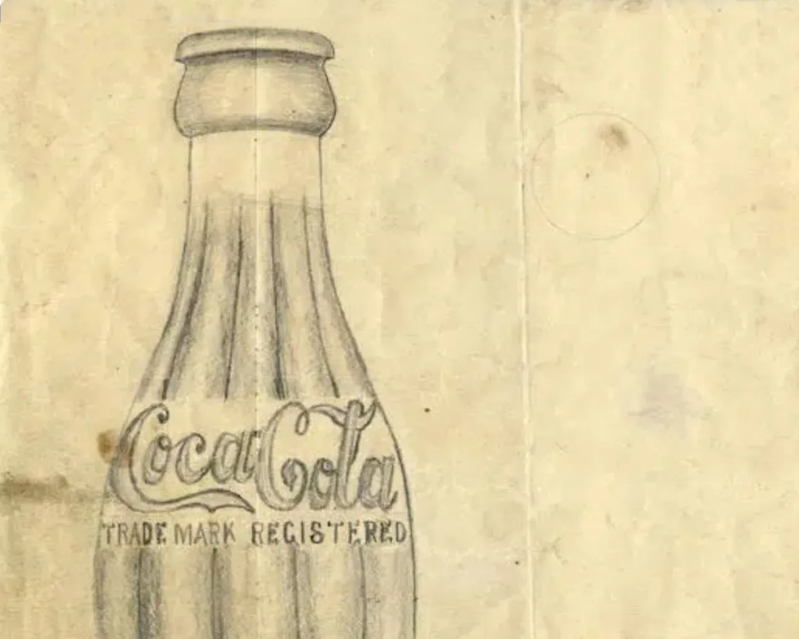
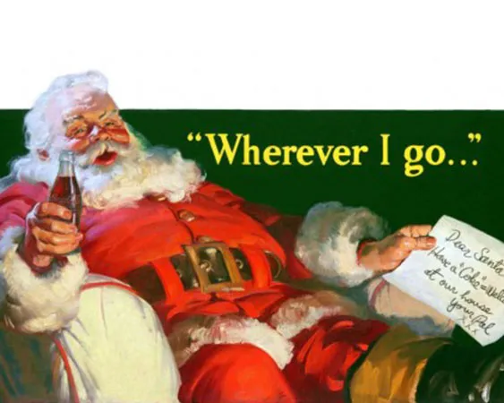
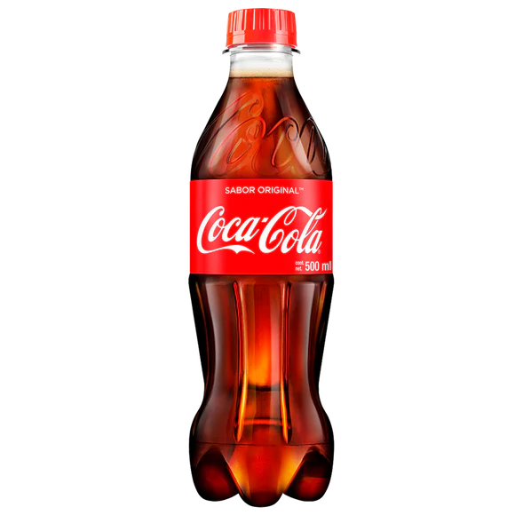
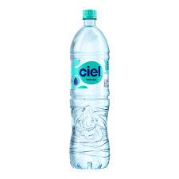
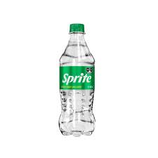

The Coca-Cola Company es una corporación multinacional estadounidense de bebidas
con sede en Atlanta, Georgia. Tiene intereses en la fabricación, venta minorista
y comercialización de concentrados y jarabes para bebidas no alcohólicas.
Historia
El origen de Coca‑Cola en los EE. UU.

El 8 de mayo de 1886, el Dr. John Pemberton vendió el primer vaso de Coca‑Cola en la farmacia Jacobs en el centro de Atlanta.
Sirviendo nueve vasos al día en su primer año, Coca‑Cola fue un nuevo refresco en sus comienzos. Mira aquí la historia de cómo empezó todo.
Una valiosa historia: refrescar el mundo y marcar la diferencia

Por más de 135 años, The Coca‑Cola Company ha sido parte de la vida de las personas en días festivos,
eventos especiales y cotidianos. Desde nuestras marcas y publicidad icónicas hasta nuestras iniciativas de sostenibilidad en todo el mundo,
The Coca‑Cola Company tiene como objetivo refrescar el mundo mientras hace una diferencia.
Historial de sostenibilidad de Coca‑Cola

Desde 1917, nuestros esfuerzos han abarcado la sostenibilidad del agua, la emancipación de la mujer, el bienestar de la comunidad,
los envases sostenibles, la protección del clima, los derechos humanos y laborales, y la agricultura sostenible.
La primera botella de Coca‑Cola

La botella contorneada ha sido célebre en el arte, la música y la publicidad.
Lee la historia de la iniciativa que comenzó en 1915 y se convirtió en una de las formas más famosas del mundo.
Santa Claus y Coca‑Cola

Con la intención de crear una campaña publicitaria que vinculara a Coca‑Cola con la Navidad, el artista Haddon Sundblom creó su primera ilustración que mostraba a Santa Claus dándose un momento para disfrutar de una Coca‑Cola.
Durante las siguientes tres décadas, de 1931 a 1964, Sundblom pintó imágenes de Santa que ayudaron a crear la interpretación moderna de St. Nick.
"El éxito de Coca-Cola radica en su capacidad de adaptarse a los cambios del mercado."
- John Pemberton
Productos Coca-Cola

Haz clic en un producto:


Coca-Cola ofrece una amplia gama de productos, entre ellos:
Refrescos: Coca-Cola, Coca-Cola Sin Azúcar, Coca-Cola Light, Fanta, Sprite, Fresca
El impacto de Coca-Cola es profundo y ambivalente: genera un alto valor económico y empleo a nivel mundial,
pero está fuertemente vinculado a problemas graves de salud: obesidad, diabetes, adicción y a una alta contaminación plástica.
Además, su operación impacta el uso de agua en comunidades.